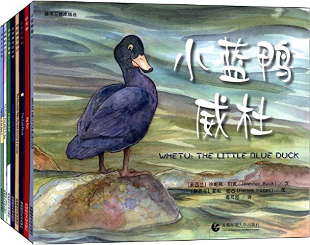
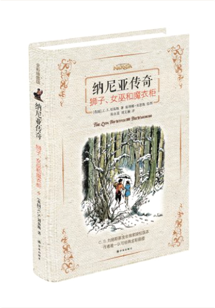
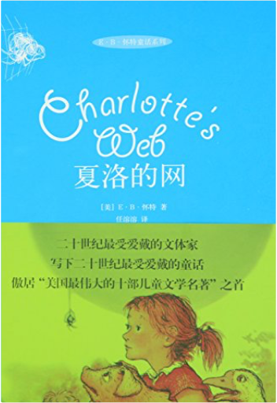

新西兰绘本精选珍妮·贝克 (Jennifer Beck)  《新西兰绘本精选(套装共8册)》入选了《想住房子的山》《安静的海盗》《这样一只狗狗！》《海滩上的狗狗》《在你睡觉的时候》《出海的房子》《巨无霸》《小蓝鸭威杜》共八本精美的图画书。其中多数作品获得了荣誉奖项，比如《想住房子的山》《安静的海盗》《这样一只狗狗！》《在你睡觉的时候》《小蓝鸭威杜》均荣获STORYLINESNOTABLE图书奖，《安静的海盗》还入选为“2013年度全球50本最佳童书”，足见这套图画书品质之高。 纳尼亚传奇:狮子、女巫和魔衣柜C.S.刘易斯 (Lewis C.S.) 在老教授的房子里有许多间屋子，屋子里有许多扇门，但是只有一扇通向另一个世界……纳尼亚。那里流传着一个预言：两个亚当的儿子和两个夏娃的女儿将会现身，击败邪恶的白女巫，结束永恒的寒冬。狮王阿斯兰说：纳尼亚的未来系于他们的勇气。在这里，一种命运即将应验，一段传奇拉开序幕。 夏洛的网E·B·怀特 《夏洛的网(精)》讲述了在朱克曼家的谷仓里，快乐地生活着一群动物，其中小猪威尔伯和蜘蛛夏洛建立了最真挚的友谊。然而，一个最丑陋的消息打破了谷仓的平静：威尔伯未来的命运竟然是成为熏肉火腿。作为一只猪，悲痛绝望的威尔伯似乎只能接受任人宰割的命运，然而，看似渺小的夏洛却说：“我救你。”于是，夏洛用自己的丝在猪栏上织出了被人类视为奇迹的网络文字，并彻底逆转了威尔伯的命运，终于让它在集市的大赛中赢得了特别奖项和一个安享天年的未来。可这时，蜘蛛夏洛的命运却走到了尽头……E·B·怀特用他幽默的大文笔，深入浅出地讲了这个很有哲理意义的故事，关于爱，关于友情，关于生死……  TimelinePeter Goes TimelinePeter Goes From the Big Bang to the present day, illustrated scenes tell the history of our planet in one continuous story in a beautiful large-format hardback for young and old.  晴朗的一天诺尼•霍格罗金(Nonny Hogrogian) 晴朗的一天诺尼•霍格罗金(Nonny Hogrogian) 《晴朗的一天》是一则古老的亚美尼亚民间故事，特别适合孩子大声朗读。一只调皮的狐狸无意间偷喝了一位老婆婆的牛奶，被恼羞成怒的老婆婆剪下了尾巴，要他用牛奶来交换，可是想得到牛奶并不那么容易，狐狸接下去都经历了什么事情呢？  爱丽丝梦游仙境刘易斯·卡罗尔 (Carroll L.) 爱丽丝梦游仙境刘易斯·卡罗尔 (Carroll L.) 温馨提示：两种封面随机发货  时差绘本•童话:了不起的小蛋糕强尼萨沙•刘易斯 (Sasha Lewis) 时差绘本•童话:了不起的小蛋糕强尼萨沙•刘易斯 (Sasha Lewis) 《了不起的小蛋糕强尼》的故事源自英格兰一个古老童话，由英国著名童话作家约瑟夫•雅各布斯于1890年创作，讲述了一个自大的蛋糕小人最终被狐狸用计吃掉的农庄故事。乡村生活是最典型的英国文化，小蛋糕强尼是一个有点自以为是的聪明小子，在跑过了农庄和黑森林中的许多动物之后，最后被狐狸用计吃掉了。一系列英国传统经典童话里的乡村动物，以及英式幽默将会在故事里出现。  自己的颜色李欧·李奥尼(Leo Lionni) 自己的颜色李欧·李奥尼(Leo Lionni) 《自己的颜色》内容简介：变色龙很苦恼，因为他没有自己的颜色，他总是走到哪儿，颜色就变成什么样。有一天，他遇见了另外一只变色龙，他们约定:既然改变不了现实的条件，就一起改变身上的颜色。从此以后，两只变色龙过上了快乐而满足的生活。  The Little World of Liz ClimoClimo, Liz The Little World of Liz ClimoClimo, Liz Artist Liz Climo has charmed her fans with her comic world of whimsical animal characters, where everyone from grizzly bears, dinosaurs, rabbits, and anteaters grapple with everyday life with wit and humor. Through her comics, we discover that an armadillo can dress for Halloween, a dinosaur can be a loving parent ... and a rhino can squeeze orange juice! This new collection features more than 100 of her comics, starring her beloved characters in all kinds of funny situations, from celebrating holidays to helping friends.  国际大奖小说:苹果树上的外婆米拉·洛贝 (Mira Lobe) 国际大奖小说:苹果树上的外婆米拉·洛贝 (Mira Lobe) 《国际大奖小说:苹果树上的外婆(升级版)》介绍了几乎所有的孩子都有外婆和奶奶，可是安迪没有，这令他很伤心。然而有一天，外婆从天而降，来到了安迪家的苹果树上。外婆和他一起去游乐场、去套野马、去海上冒险……外婆的打扮很奇怪，裙边下总是露出好笑的白色衬裤花边；她总有些大胆新鲜的主意，就算被警察处罚也不在乎——嘿！这个外婆还真“另类”。直到有一天，邻居家搬来了一位新奶奶，她的故事也很奇特，而安迪在两位老人的爱抚中懂得了许多许多。  最美的黄玫瑰琳达·拉文·洛丁 (Linda Ravin Lodding) 最美的黄玫瑰琳达·拉文·洛丁 (Linda Ravin Lodding) 今天是奥斯卡妈妈的生日，他要为妈妈选一件最美的礼物。奥斯卡用仅有的一块钱买了一朵黄玫瑰，接着，他又先后遇到了许多大人物，要和他交换礼物。奥斯卡先后换到了快乐的礼物、惊喜的礼物、甜蜜的礼物……但是，到底哪件才是最美的礼物呢？ |
 Made with Delicious Library
Made with Delicious LibraryGuangzhou, AP zipflap congrotus delicious library Yv, Jarod